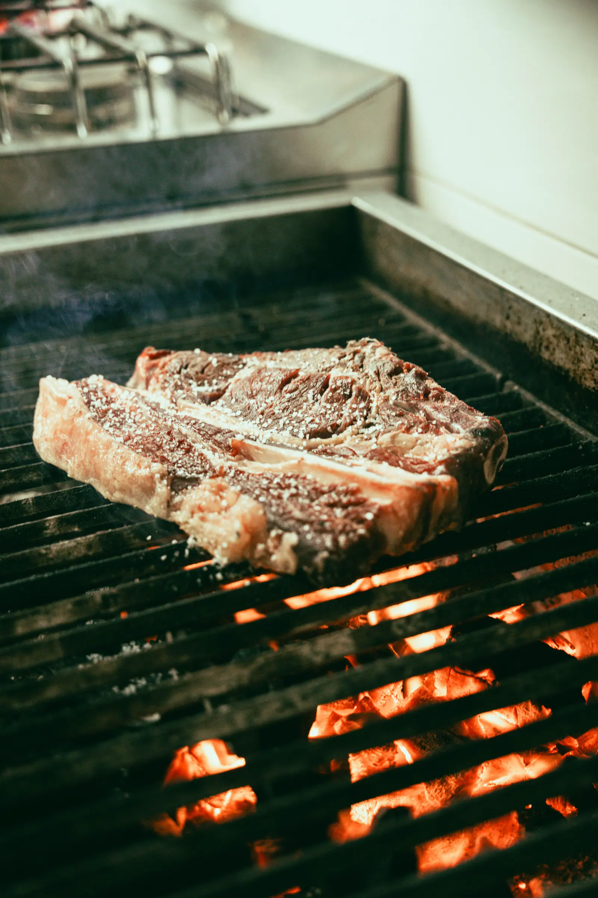
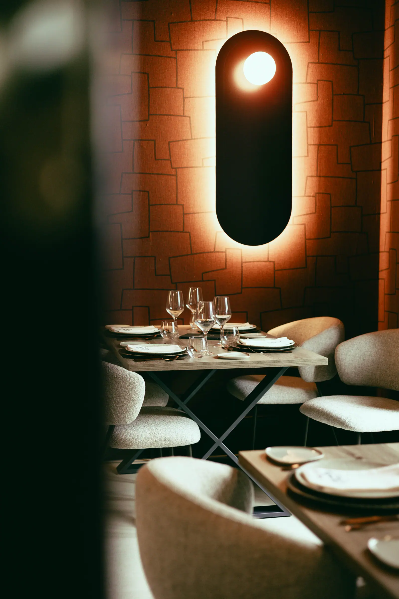
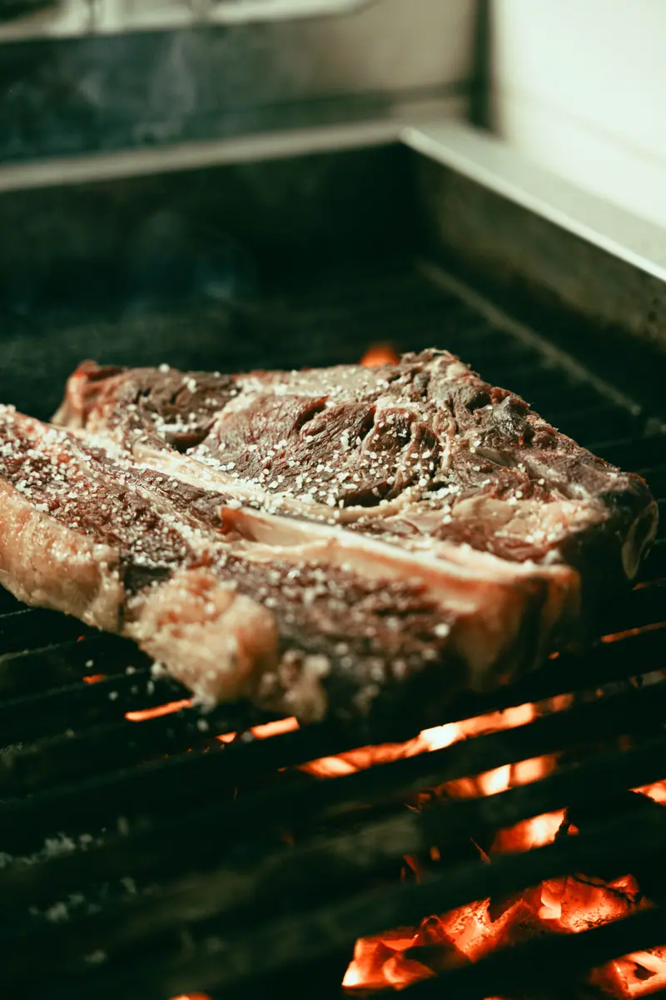
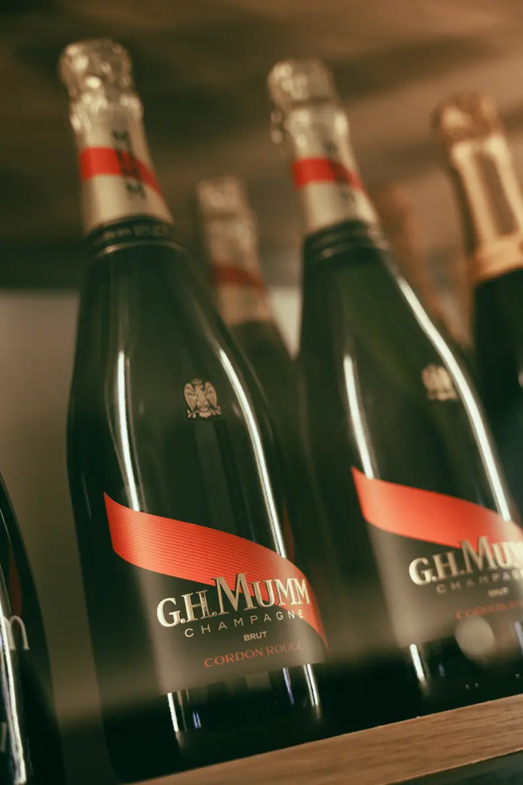

Cocina de la tierra, mesa de familia.
Restaurante en Ribera del Fresno. Ibérico, brasa, arroces y bodega en la antigua casa solariega de los Britos.
Abrimos de jueves a domingo



Bienvenidos al restaurante
En la calle dedicada a Meléndez Valdés, poeta ilustre de Ribera del Fresno, nace un espacio donde disfrutar de la buena gastronomía sin prisas. Jamón ibérico de bellota, chuletones extremeños a la brasa, pescados frescos y arroces para compartir, todo ello acompañado de una cuidada selección de vinos de nuestra tierra.
Conocer el restauranteBrasa, arroces y sobremesa
Producto de la tierra, fuego de verdad y una bodega a la vista.

Directo a la parrilla
Ternera extremeña, angus y wagyu; presa y pluma ibérica; pulpo y pescado de lonja. Todo pasa por la brasa y llega a la mesa al punto que nos pidas.
Ver todas las carnesDe la tierra a la brasa
Pregunta por las sugerencias del día al reservar o en la mesa.
Ver la carta completaLa bodega
Treinta y ocho referencias con un sitio especial para Extremadura: Viña Puebla, Habla del Silencio, Haragán o Pentateuco, y el vino de la Cooperativa de Ribera del Fresno, el del pueblo.
Para las carnes, Rioja y Ribera del Duero. Para brindar, cava y champagne.
Ver la bodega
Nuestros salones
Comedor principal, salón privado y la bodega a la vista. Pide tu mesa favorita al reservar.
Conocer los salones
La casa que marcó el pulso del pueblo
El restaurante toma su nombre de la Casa Solariega de los Britos, en el corazón de Ribera del Fresno. Fue casa de familia, casino y punto de encuentro de los vecinos. Desde diciembre de 2025, tras una reforma integral, vuelve a estar abierta al pueblo.
Leer la historiaTe guardamos la mesa
Las reservas se hacen solo por teléfono. Te atendemos de jueves a domingo.
Abrimos de jueves a domingo
- Jueves a domingo
- 12:30 – 23:30
- Lunes a miércoles
- Cerrado
¿Una boda, un bautizo, una comunión o un catering? Lo organiza nuestro grupo de eventos.
Ir a Britos Eventos